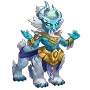
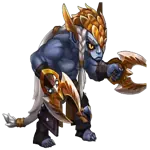
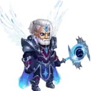
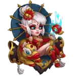

Guia do Pet Oliver em Hero Wars: Dominion Era
- Por: Alexandre Domingos. .
Descubra tudo sobre Oliver, um dos melhores mascotes de suporte em Hero Wars: Dominion Era. Aumente a durabilidade da sua equipe e a eficiência da cura com suas habilidades únicas.
Neste guia, exploraremos as habilidades ativas de Oliver, os efeitos de patronagem e as prioridades de atributos para ajudá-lo a maximizar seu potencial em todos os modos de jogo.

Quem é Oliver?
Oliver é um mascote de cura e suporte conhecido por seus poderosos reforços defensivos. Ele ajuda os heróis a sobreviverem por mais tempo nas batalhas, reduzindo o dano recebido e restaurando a Vida.
- Classe: Suporte
- Posição: Atrás dos Heróis
- Atributo Principal: Poder de Patronagem
Atributos Máximos
| Poder | 181.943 |
| Penetração Mágica | 47.911 |
| Poder de Habilidade | 12.360 |
| Poder de Patronagem | 11.064 |
Prós e Contras de Oliver – Hero Wars: Web e Facebook
✅ Prós
- Excelente suporte de cura tanto para tanques quanto para heróis frágeis.
- Cura passiva através da patronagem funciona mesmo quando Oliver não está em combate.
- Aumenta a Vida e a Armadura, melhorando a sobrevivência de muitos heróis da linha de frente.
- Ótimo para combater equipes com muito dano fÃsico, graças à habilidade Abraço de Floria.
- Fácil de usar – habilidades ativas e de patronagem são ativadas automaticamente.
⌠Contras
- Menos eficaz contra equipes que causam principalmente dano mágico.
- Sem habilidades ofensivas – Oliver é totalmente focado em defesa e suporte.
- As curas são limitadas em situações de explosão de dano, quando vários heróis perdem muita Vida ao mesmo tempo.
- Não é ideal para batalhas rápidas onde mascotes agressivos (como Cain ou Albus) se destacam.
- A cura depende do Poder de Habilidade e do Poder de Patronagem, então sua eficácia depende de melhorias.
Prioridade de Melhoria das Habilidades do Oliver – Hero Wars: Dominion Era
Oliver oferece cura poderosa e proteção, tornando seus heróis mais difÃceis de serem derrotados em qualquer situação de batalha.
As habilidades de Oliver são focadas em manter seus heróis vivos durante os combates. Ele usa magia de cura de forma inteligente – curando quem mais precisa e protegendo contra o dano.
Habilidades Ativas de Oliver
Abraço de Floria
Esta habilidade cria um escudo mágico protetor ao redor dos seus heróis. Assim que um herói sofre dano fÃsico, o escudo é ativado e o cura com base na quantidade de dano recebido.
Pode restaurar até 175.040 de Vida, dependendo do Poder de Habilidade do Oliver.
Como isso ajuda: Imagine que seu tanque leva um ataque poderoso – em vez de perder toda aquela Vida, o escudo de Oliver cura instantaneamente, mantendo sua linha de frente segura.


Pó de Fada
Esta habilidade cura automaticamente o aliado com a menor quantidade de Vida. A quantidade de cura depende do Poder de Habilidade do Oliver, chegando a até 22.348 de Vida.
Como isso ajuda: Quando um dos seus heróis está prestes a cair em batalha, Oliver entra com essa cura emergencial para ajudá-lo a sobreviver e continuar lutando. É automática, então você não precisa fazer nada – Oliver cuida disso para você.

Habilidade de Patronagem de Oliver
Flor Eterna
Quando Oliver é atribuÃdo a um herói como patrono, ele dá a esse herói a chance de cegar inimigos com seus ataques básicos por 2 segundos. Isso significa que os ataques inimigos podem errar.
Além disso, essa habilidade cura o herói de Oliver em 11.064 de Vida a cada 0,5 segundo durante a batalha.
Como isso ajuda: A cura é contÃnua e funciona mesmo que Oliver não esteja em combate. É especialmente útil para heróis frágeis que precisam de ajuda para se manter vivos ou para aqueles na linha de frente recebendo muitos golpes.
Patronagem de Oliver – Hero Wars
Oliver fornece Vida extra e Armadura por meio da patronagem, junto com uma habilidade de cura passiva que ajuda os heróis a sobreviver quando sua Vida cai abaixo de 50%.
TMNT

Alvanor
Amira

Andvari


Aurora

Chabba

Cleaver

Cornelius

Corvus

Fafnir

Galahad

Iris


Isaac

Ishmael
Jet

Jorgen

Judge

Julius

Lilith

Luther

Markus
Martha

Morrigan
Cogu


Sebastian

Ziri

Conclusão do Guia do Oliver
Oliver se destaca como um dos melhores mascotes defensivos em Hero Wars: Dominion Era. Suas habilidades de cura e aumento de atributos o tornam uma escolha perfeita para equipes que priorizam a sobrevivência, especialmente contra dano fÃsico intenso. Seja usado diretamente na batalha ou como patrono, Oliver ajuda consistentemente seus heróis a sobreviverem por mais tempo e lutarem de forma mais eficaz.
Graças à sua cura passiva através do patronato, Oliver agrega valor mesmo quando não está no campo de batalha. Sua sinergia com heróis da linha de frente, como tanques e unidades de suporte, o torna um mascote confiável em muitas composições de equipe. Jogadores que buscam construir uma base sólida para a durabilidade de sua equipe acharão as habilidades do Oliver especialmente úteis em lutas longas e nas fases da campanha.
No entanto, Oliver não é uma solução universal. Contra equipes focadas em dano mágico ou com ataques explosivos, pode ser melhor considerar outros mascotes com habilidades mais agressivas ou de controle. Ainda assim, se sua estratégia envolve sustentar sua equipe e resistir mais que os oponentes, Oliver é uma escolha de alto nÃvel que oferece resultados consistentes em vários modos de jogo.
Explore novas habilidades com nossos heróis em destaque!
 Guia do Mascote Khorus – Hero Wars: Dominion Era | Atributos, Função e Como Usar
Guia do Mascote Khorus – Hero Wars: Dominion Era | Atributos, Função e Como Usar  Guia do Mascote Biscuit – Hero Wars: Dominion Era
Guia do Mascote Biscuit – Hero Wars: Dominion Era  Guia Completo dos Mapas de Aventura para Mascotes – Hero Wars: Dominion Era
Guia Completo dos Mapas de Aventura para Mascotes – Hero Wars: Dominion Era Deixe Sua Opinião!
Você gostou do nosso Guia do PET Oliver? Há algo que não entendeu ou gostaria de sugerir mudanças? Convidamos você a se juntar à nossa sessão de comentários na página do Alexandre Games Blog. Não hesite em expressar sua opinião, clarificar suas dúvidas e compartilhar sua sugestões.
Clique no botão abaixo para começar: